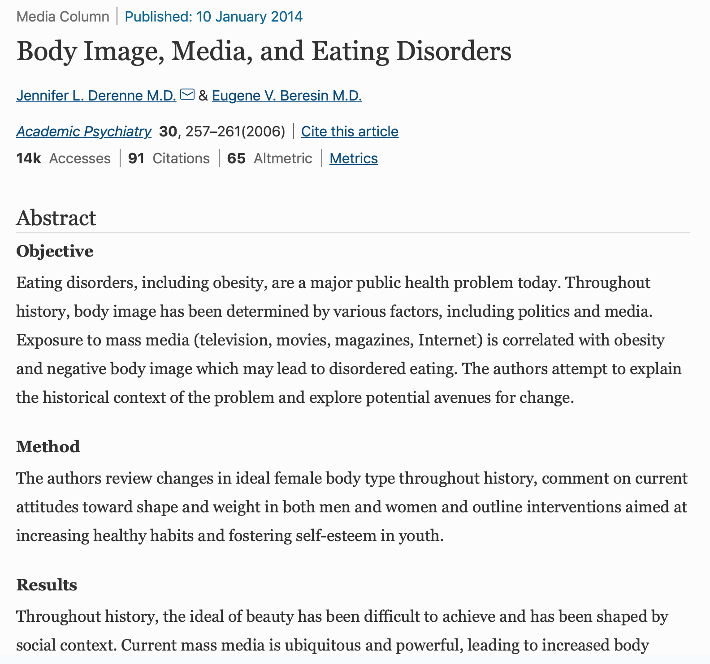
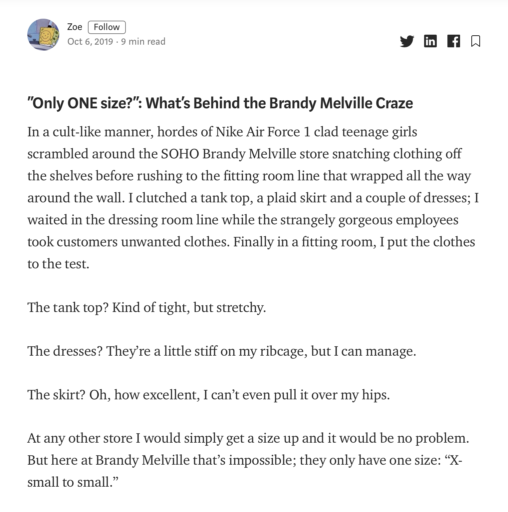
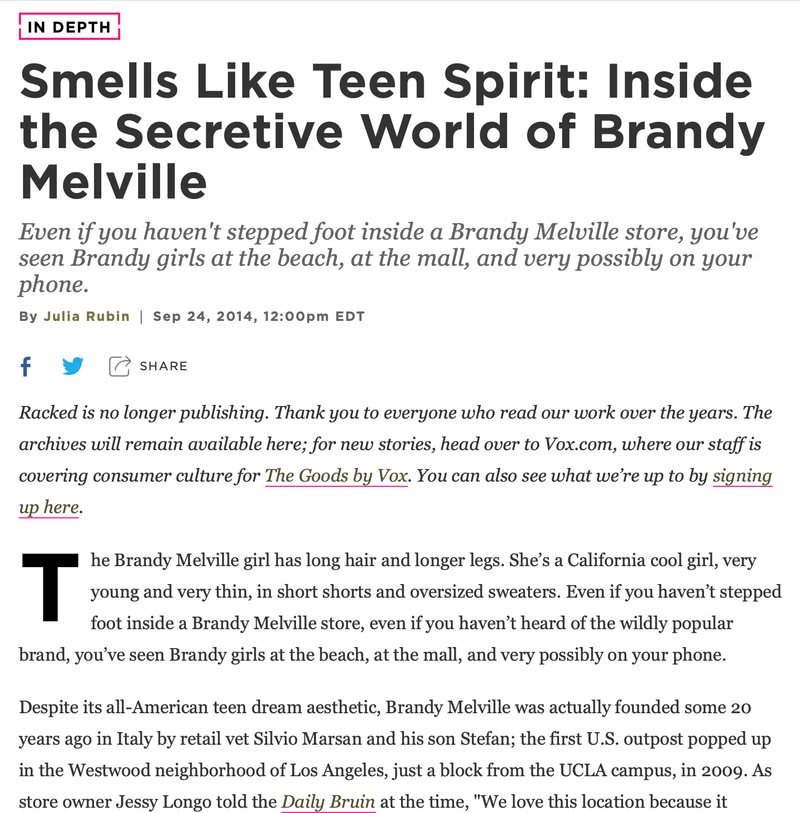

According to the National Eating Disorder Association, a recent study of women between the ages of 18 and 25 showed a link between Instagram and increased self-objectification and body image concerns, especially among those who frequently viewed fitspiration images.


As you scroll through their Instagram and website, you will notice two striking factors that categorize every single one of their models: they are all skinny and white.

The Brandy Melville girl has long hair and longer legs. She’s a California cool girl, very young and very thin, in short shorts and oversized sweaters.